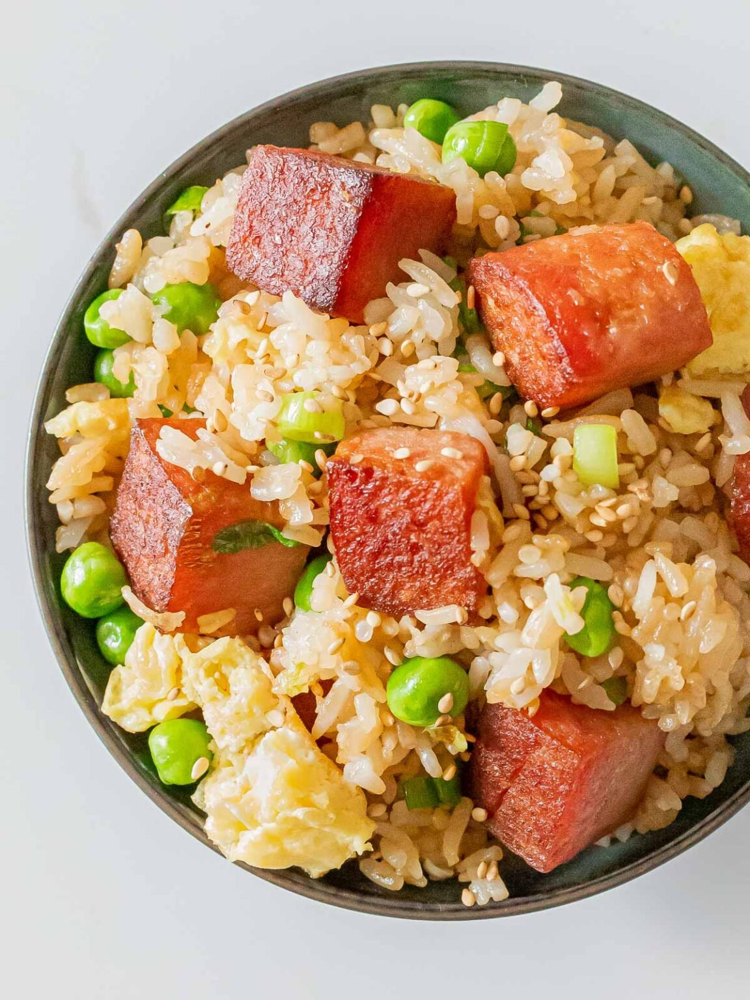

SPAM Fried Rice

I had to scavenge through my junk folder for this one (ㆆ_ㆆ)
This spam fried rice with egg is one that I really enjoy and if you're not a fan of spam,
you can replace it with ham or bacon or just remove it.
It's salty, savoury and totally hits the spot when I'm craving a quick fried rice.
It's very easy to make and great for those weeknight meals when you want something indulgent but quick.
This is absolutely the best spam fried rice I've ever made and it's incredibly popular and well-loved! So I hope you give it a try!
Ingredients
- 2 tbsp avocado oil
- 1 block of spam
- 1 shallot
- 2 green onions
- 2 tsp garlic minced
- ⅓ cup frozen corn
- ⅓ cup frozen peas
- 1 cup carrots diced
- 2 eggs whisked
- 1 ½ tbsp soy sauce
- 1 tbsp butter
- ¼ tsp salt
- 4 cups cooked rice
- 1 tbsp dark soy sauce
- 1 tsp sesame oil
Steps
- In a large non-stick pan over medium-high heat, fry your spam until golden brown on each side.
Then toss in your shallots. Fry until the shallots have softened.
- Next add in avocado oil, green onions and garlic. Give this is a stir and push this to the side of your pan.
- Then add in corn, peas and carrots. Fry and combine with the other ingredients. Then push this to the side.
- Pour in your whisked eggs. Allow this to cook and then break into bite size pieces. Push this to the side.
- Add in cooked rice followed by soy sauce, dark soy sauce, butter, and salt. Toss until the rice and other ingredients
are well combined and evenly coated. Every grain should be brown.
- Turn off the heat and drizzle sesame oil over. This should be the last step as sesame oil tends to change taste when it's over heated.
- Chow Down!

Return Home